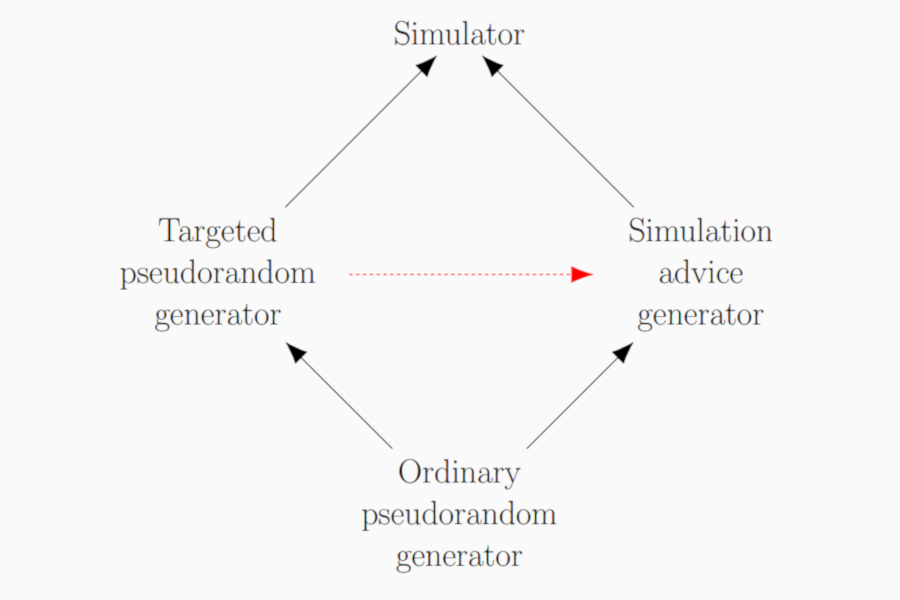

Targeted Pseudorandom Generators, Simulation Advice Generators, and Derandomizing Logspace
By William M. Hoza and Chris Umans
Timeline: Manuscript posted online in October 2016; appeared at STOC in June 2017.
Read the paper: arXiv • STOC proceedings
Version notes: The STOC proceedings version and the arXiv version are the same except for formatting.
Abstract (for specialists)
Assume that for every derandomization result for logspace algorithms, there is a pseudorandom generator strong enough to nearly recover the derandomization by iterating over all seeds and taking a majority vote. We prove under a precise version of this assumption that \(\mathbf{BPL} \subseteq \bigcap_{\alpha > 0} \mathbf{DSPACE}(\log^{1 + \alpha} n)\).
We strengthen the theorem to an equivalence by considering two generalizations of the concept of a pseudorandom generator against logspace. A targeted pseudorandom generator against logspace takes as input a short uniform random seed and a finite automaton; it outputs a long bitstring that looks random to that particular automaton. A simulation advice generator for logspace stretches a small uniform random seed into a long advice string; the requirement is that there is some logspace algorithm that, given a finite automaton and this advice string, simulates the automaton reading a long uniform random input. We prove that \[ \bigcap_{\alpha > 0} \mathbf{promise\text{-}BPSPACE}(\log^{1 + \alpha} n) = \bigcap_{\alpha > 0} \mathbf{promise\text{-}DSPACE}(\log^{1 + \alpha} n)\] if and only if for every targeted pseudorandom generator against logspace, there is a simulation advice generator for logspace with similar parameters.
Finally, we observe that in a certain uniform setting (namely, if we only worry about sequences of automata that can be generated in logspace), targeted pseudorandom generators against logspace can be transformed into simulation advice generators with similar parameters.
Not-so-abstract (for curious outsiders)
⚠️ This summary might gloss over some important details.
There's a well-known conjecture in complexity theory ("\(\mathbf{L} = \mathbf{BPL}\)") that says that randomness isn't necessary for solving problems using a small amount of computer memory. The most promising approach to proving this conjecture is to design a suitable kind of "pseudorandom generator". But in principle, one could hope to prove \(\mathbf{L} = \mathbf{BPL}\) using a totally different approach. In this paper, we prove a theorem that can be roughly stated as follows. If every true statement along the lines of \(\mathbf{L} = \mathbf{BPL}\) can be proven using the pseudorandom generator approach, then in fact \(\mathbf{L} = \mathbf{BPL}\) (actually the conclusion is slightly weaker).
Expository material:

Slides from my presentation at STOC (June 2017). See also these slides from my longer presentation at Dagstuhl Seminar 16411 (October 2016).
Poster from my presentation at STOC (June 2017).
Errata: 😬
- (May 2017) In Lemma 2, the space complexity should be \(O(s + \log w + \log(1/\delta) + \log(1/\gamma))\). That is, there is a missing \(O(\log(1/\delta))\) term in the lemma statement. This does not affect anything else in the paper.
What others think:
- The paper was invited to the SICOMP special issue for STOC 2017.
- Oded Goldreich wrote a blog post that mentions the paper.